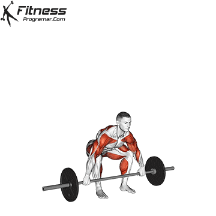
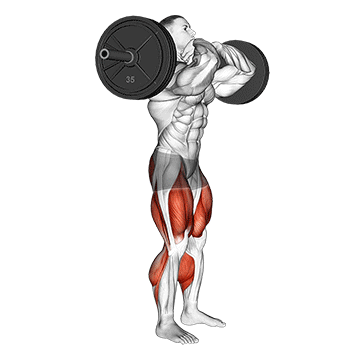
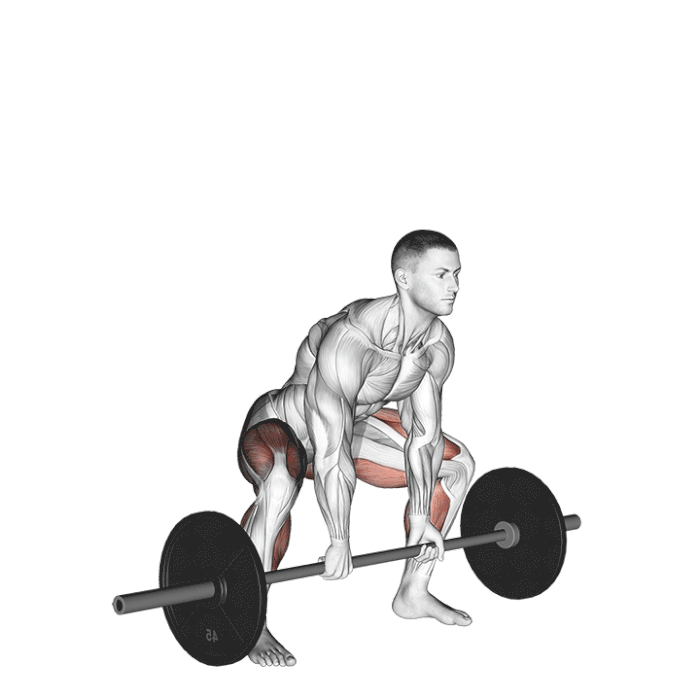
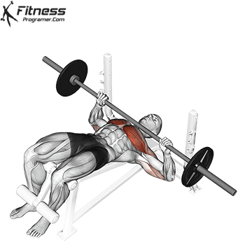

Pro Level Workouts
Here are some advanced pro-level workouts to challenge experienced athletes:
Powerlifting
- Snatch - 5 sets of 3 reps
- Clean and Jerk - 5 sets of 3 reps
- Front Squat - 5 sets of 5 reps
- Sumo Deadlift - 5 sets of 5 reps
- Bench Press - 5 sets of 5 reps
A snatch, or squat snatch, is a technical, advanced weightlifting movement. It’s a move popular with CrossFit and Olympic athletes. Snatches use momentum to lift a barbell above your head in a fluid motion. It’s a dynamic movement requiring a solid core and controlled balance.
The clean & jerk is the second of the two lifts—the snatch and the clean & jerk—contested in the sport of weightlifting (AKA Olympic weightlifting). The athlete lifts the barbell first from the floor to the shoulders, and then from the shoulders to overhead. Jerk implies the lifter’s chosen competitive jerk style, which is most commonly the split jerk.

In the squat rack, set the bar up to be mid shoulder height and bend the knees to set the hips under the bar. The bar will be under your chin, by the clavicle. Take your thumbs to the outside of your shoulders, this is where your grip will be on the bar. Pull your elbows out and forward under the bar. Straighten the legs and unrack the bar, take some small steps back. Lock your core and keep your chest proud with the elbows in line with your shoulders. Keep the barbell over your mid foot and sink your hips into a squat with your thighs hitting parallel or lower. Explosively drive through the floor to push yourself back to standing.
Step up close to the bar with wide foot placement. A good starting point is to have the bar over the middle of your foot and stand so wide that your shins are vertical, as seen from the front. Inhale, bend down and grip the bar. Hold your breath, brace your core slightly, and lift the bar. Pull the bar close to your body, with a straight back, until you are standing straight. Lower the bar back to the ground with control. Take another breath, and repeat for reps.
Draw your shoulder blades back behind you to keep from pressing with rounded shoulders. Grasp the barbell using an overhand grip, placing your thumbs on the outside of your closed fist. Your arms are slightly wider than shoulder-width apart and the angle of your upper arms is about 45 degrees to the body. Remove the barbell from the rack, locking your elbows. (Don't move the bar in an arc from the rack directly to the chest position.) Inhale while lowering the bar to your chest, at the nipple line. Exhale as you press the bar above your chest, extending your arms. Don't watch the bar—focus on the ceiling. Lower the bar so it is just above your chest. This is the starting position for the next bench press.
Calisthenics
| Exercise | Sets |
|---|---|
| Handstand Push-ups | 15 sets of max reps |
| Muscle-ups | 5 sets of max reps |
| Pistol Squats | 5 sets of 5 reps each leg |
| Planche Push-ups | 5 sets of max reps |